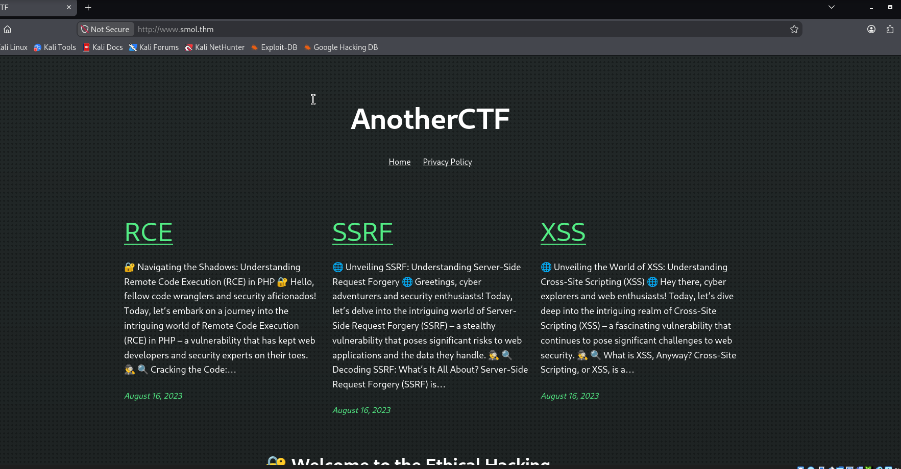
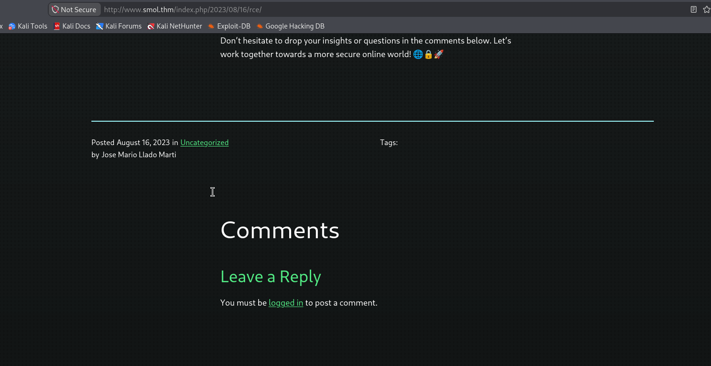

Smol
root in /home/yoinkas
❯ nmap -sC -sV -vv -T4 -p- 10.64.185.131
Starting Nmap 7.991 ( https://nmap.org ) at 2026-11-13 06:32 -0500
NSE: Loaded 158 scripts for scanning.
NSE: Script Pre-scanning.
NSE: Starting runlevel 1 (of 3) scan.
Initiating NSE at 06:32
Completed NSE at 06:32, 0.00s elapsed
NSE: Starting runlevel 2 (of 3) scan.
Initiating NSE at 06:32
Completed NSE at 06:32, 0.00s elapsed
NSE: Starting runlevel 3 (of 3) scan.
Initiating NSE at 06:32
Completed NSE at 06:32, 0.00s elapsed
Initiating Ping Scan at 06:32
Scanning 10.64.185.131 [4 ports]
Completed Ping Scan at 06:32, 0.04s elapsed (1 total hosts)
Initiating Parallel DNS resolution of 1 host. at 06:32
Completed Parallel DNS resolution of 1 host. at 06:32, 0.50s elapsed
Initiating SYN Stealth Scan at 06:32
Scanning 10.64.185.131 [65535 ports]
Discovered open port 22/tcp on 10.64.185.131
Discovered open port 80/tcp on 10.64.185.131
Completed SYN Stealth Scan at 06:32, 18.77s elapsed (65535 total ports)
Initiating Service scan at 06:32
Scanning 2 services on 10.64.185.131
Completed Service scan at 06:33, 6.26s elapsed (2 services on 1 host)
NSE: Script scanning 10.64.185.131.
NSE: Starting runlevel 1 (of 3) scan.
Initiating NSE at 06:33
Completed NSE at 06:33, 1.16s elapsed
NSE: Starting runlevel 2 (of 3) scan.
Initiating NSE at 06:33
Completed NSE at 06:33, 0.15s elapsed
NSE: Starting runlevel 3 (of 3) scan.
Initiating NSE at 06:33
Completed NSE at 06:33, 0.00s elapsed
Nmap scan report for 10.64.185.131
Host is up, received echo-reply ttl 62 (0.032s latency).
Scanned at 2026-11-13 06:32:40 EST for 27s
Not shown: 65533 closed tcp ports (reset)
PORT STATE SERVICE REASON VERSION
22/tcp open ssh syn-ack ttl 62 OpenSSH 8.2p1 Ubuntu 4ubuntu0.13 (Ubuntu Linux; protocol 2.0)
| ssh-hostkey:
| 3072 4a:40:18:1b:15:bf:5c:62:08:8b:c7:1d:31:fe:db:2b (RSA)
| ssh-rsa AAAAB3NzaC1yc2EAAAADAQABAAABgQC2p43D+u+kH+OYs5+QucdQoxiSlPn0AiZujoeRjmYVxuEcXH0JSdHbO+JpseCW8GzcseHzyLfGpGOOKdAnBeT1kw0PLTohiRCMnxS2/gGUNUnauPz3yj7VC70Qdy075x/M1f8D6T37HyFiNmpjR51KKOqsq1NAV63KZmggqiK/6rm8zfL+CfBCEwx5MoB1WqvXD0eWnJmngR9NRU1qFBgFzH3oLygiOI61zEZD5Q9o5LQ41sGjT0PSFo9n16r3215DITu33L0cxS03otBwX0uTRdiN7PXabDuu6uXjPgjnwK36u/8HYe5nTZC6NWw7VIKkvpj6txJRg0A/fz3MpAoRsUVAa+DY0E433gFIXmgtcQ2NIUjHh3xeFeF7SVyk6zbBzJf64iPRaDFA6XfeGEsMyd7Ddv+Dz/1mjerpfcl+0lzppUYP+6np7VwFE0cIwBp6KLqmSaHBiXhHWYQb65rFGo63bt2sL0ttcE7w6aWHWxYo76o/mRGapUfzPYME4Ps=
| 256 55:f8:f0:ea:21:5d:89:23:71:8e:48:60:48:d5:78:7c (ECDSA)
| ecdsa-sha2-nistp256 AAAAE2VjZHNhLXNoYTItbmlzdHAyNTYAAAAIbmlzdHAyNTYAAABBBG3w0lgD++kU15K28WldJb0hYBzESDrs5267ck4aAX/oPTNyNdJ6KGC6mZaW2589P26lodJOFT0vw92+zVsJL6o=
| 256 d8:d7:f5:94:73:80:a0:62:20:80:1e:1e:44:9e:fb:ed (ED25519)
|_ssh-ed25519 AAAAC3NzaC1lZDI1NTE5AAAAIMIBq8O4o8/lbEho+bP3y2wlqFBbmLAVwQgq0pChxfIn
80/tcp open http syn-ack ttl 62 Apache httpd 2.4.41 ((Ubuntu))
| http-methods:
|_ Supported Methods: GET HEAD POST OPTIONS
|_http-title: Did not follow redirect to http://www.smol.thm
|_http-server-header: Apache/2.4.41 (Ubuntu)
Service Info: OS: Linux; CPE: cpe:/o:linux:linux_kernel
NSE: Script Post-scanning.
NSE: Starting runlevel 1 (of 3) scan.
Initiating NSE at 06:33
Completed NSE at 06:33, 0.00s elapsed
NSE: Starting runlevel 2 (of 3) scan.
Initiating NSE at 06:33
Completed NSE at 06:33, 0.00s elapsed
NSE: Starting runlevel 3 (of 3) scan.
Initiating NSE at 06:33
Completed NSE at 06:33, 0.00s elapsed
Read data files from: /usr/share/nmap
Service detection performed. Please report any incorrect results at https://nmap.org/submit/ .
Nmap done: 1 IP address (1 host up) scanned in 31.07 seconds
Raw packets sent: 65539 (2.884MB) | Rcvd: 65536 (2.621MB)you must add the sub directory in your /etc/hosts file
then youre brought to this page

at the bottom you see this
POWERED BY WORDPRESS
clicking RCE on the homepage will bring you to that paage and if you scrool down you will see this
